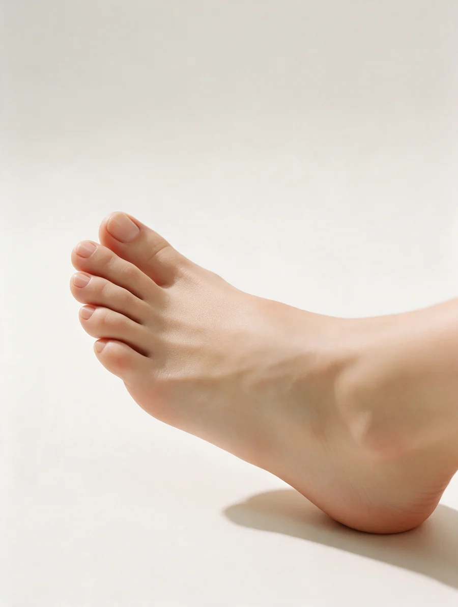
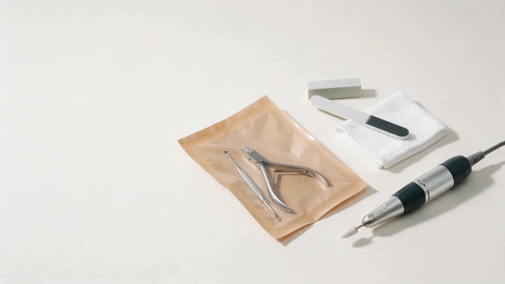
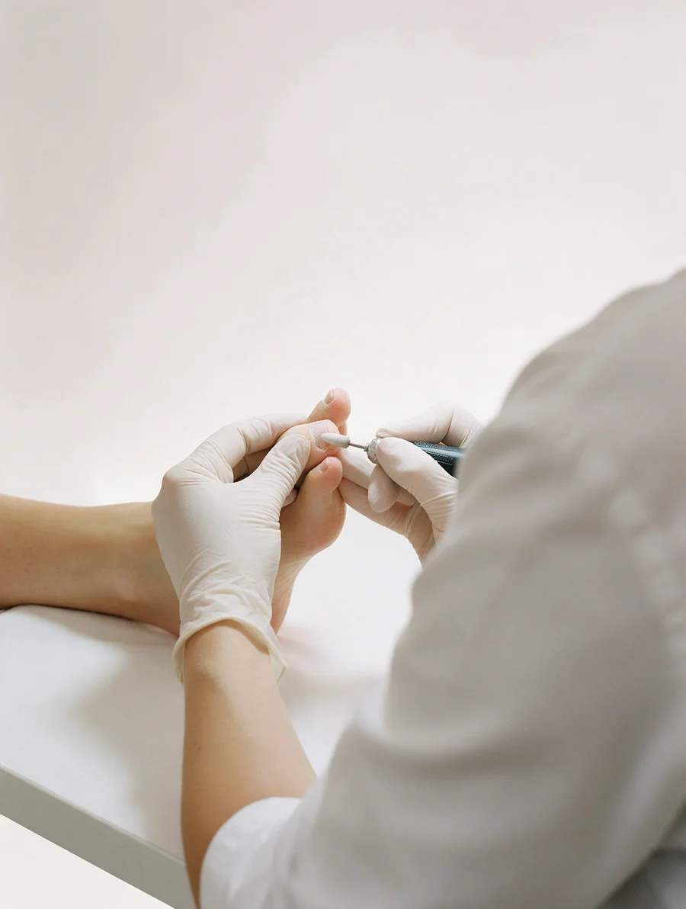
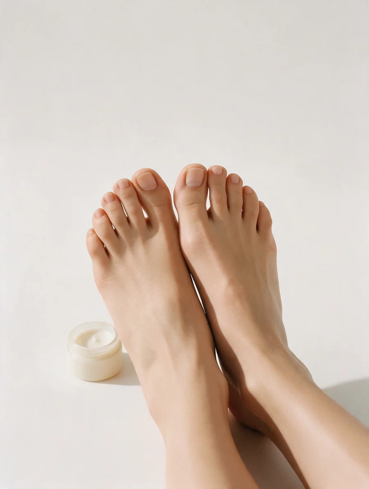

Подология и аппаратный педикюр · Мурманск
Подология и аппаратный педикюр в Мурманске – цена до записи
Консультация подолога – 1 000 ₽: осмотр, план действий, при необходимости направим к врачу. Цены на процедуры – в прайсе ниже.
- Цена названа до записи
- Инструменты проходят обработку по нормам СанПиН
- Ежедневно с 10:00 до 20:00

Что входит в обработку вросшего ногтя
Входит
- Обработка вросшего угла и ногтя
- Промывание раны
- Тампонада
- Перевязка с препаратом
- Рекомендации и консультация
Отдельно, если нужно
- Установка титановой нити
- Индивидуальные стельки
- Выездной приём
Цена названа до записи
Цены – как в прайсе центра на 16 октября 2026. Что входит в процедуру, написано в строке.
Аппаратный педикюр
- Консультация подологаосмотр ногтей и стоп, анамнез, план действий1 000 ₽
- Аппаратный педикюрздоровые ногти, без грибка, трещин и утолщения3 300 ₽
- Обработка ногтевых пластинтолько ногти и пальцы, без обработки кожи стоп3 000 ₽
- Педикюр с гель-лакомздоровые ногти, снятие старого покрытия отдельно4 100 ₽
- Детский педикюр8–12 лет, здоровые ногти и кожа1 500 ₽
- Снятие гель-лака фрезой300 ₽
Подологический уход
- Подологическая обработка 13 800 ₽
- Подологическая обработка 24 800 ₽
- Подологическая обработка 4утолщённые ногти, трещины, микоз, псориаз, запущенные ноги; первичная5 000 ₽
- Стержневая мозоль с разгрузкойфреза, кусачки, подологические материалы1 500 ₽
Вросший ноготь и титановая нить
- Вросший ноготь, первичная обработкабез грануляции2 000 ₽
- Вросший ноготь 3–4 степени, первичнаягрануляция, воспаление, отёк2 500 ₽
- Установка нити на большой ноготь без педикюра3 500 ₽
- Установка нити во время педикюрацена за одну нить, плюс педикюр3 000 ₽
- Коррекция нити без педикюра2 000 ₽
- Коррекция нити во время педикюра1 000 ₽
- Коррекция одной стороны700 ₽
Бородавки и стельки
- Бородавки: консультация1 000 ₽
- Обработка 1–3 бородавокпроцедура раз в 10 дней1 000 ₽
- Множественные бородавкиот 4 шт, раз в 10 дней2 000 ₽
- Анатомические индивидуальные стельки4 000 ₽
- Выездной педикюр10 000 ₽
Цены взяты из прайса центра в 2ГИС. Пропускать повторные приёмы нельзя: при вросшем ногте и бородавках мастер вправе отказать в дальнейшей работе, чтобы не было регресса.
Как проходит запись
- 01
Пишете или записываетесь онлайн
Называем, к какому мастеру и на какое время можно прийти.
- 02
Осмотр и консультация
Осматриваем ногти и стопы, собираем анамнез, называем план действий.
- 03
К врачу – если это нужно
Если случай не для подолога, направим к врачу.
- 04
Процедура
Работаем аппаратом по нормам СанПиН, цену называем до начала.
- 05
Рекомендации по уходу
Рассказываем, как ухаживать за ногтями и стопами, и когда прийти на повторный приём.



Что обещаем
Цена до записи
Прайс на 24 позиции открыт, обновлён 16 октября 2026.
Инструменты по нормам СанПиН
Все инструменты проходят обработку по нормам СанПиН.
Консультация подолога
Осмотр, анамнез и план действий; при необходимости направим к врачу.
Гарантия 3 дня на установку нити
Коррекция по гарантии: нужно записаться к мастеру.
Отзывы с 2ГИС
«Пришла с вросшими ногтями еще в далеком 2013. И с тех пор являюсь постоянным клиентом. Лучший центр и мастера в городе!»
Анастасия Савинская · 25 июля 2023
«Спасибо мастеру Ярославе за помощь в решении проблемы вросшего ногтя у ребенка. Быстро, безболезненно. Мастер все рассказала, объяснила. Ребенок и родители в восторге.»
Анастасия Раздрогина · 24 января 2025
«Хочу поблагодарить мастера Юлию! Огромное Вам спасибо! Качественно оказана услуга, мастер полностью проконсультировала по уходу, порекомендовала профессиональные средства!»
Евгения Майорова · 22 декабря 2024
Отзывы с карточки на 2ГИС, без правок.
Частые вопросы
С чего начать, если я не знаю, что у меня с ногтем?
С консультации подолога за 1 000 ₽: осмотр ногтей и стоп, анамнез, план действий. Если нужен врач – направим.
Помогаете при вросшем ногте?
Да. В процедуру входит обработка вросшего угла и ногтя, промывание раны, тампонада, перевязка с препаратом, рекомендации и консультация. Повторные приёмы важны.
Как у вас со стерильностью?
Все инструменты проходят обработку по нормам СанПиН.
Сколько стоит обработка бородавок?
1 000 ₽ за 1–3 бородавки, 2 000 ₽ за 4 и больше. Процедура проводится раз в 10 дней.
Принимаете детей?
Да, детский педикюр для 8–12 лет – 1 500 ₽, обработка вросшего ногтя у ребёнка – по прайсу.
Запись на ближайшие дни
- Адрес
- улица Воровского, 5/23 (Конгресс-отель Меридиан), Мурманск
- Часы
- Ежедневно с 10:00 до 20:00, по предварительной записи
- Телефон
- +7 909 564-00-44